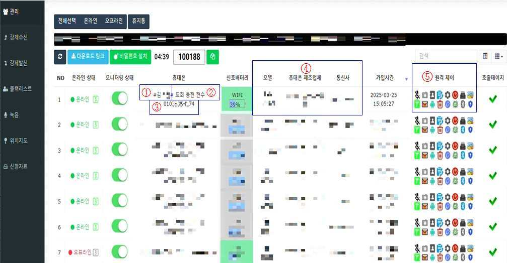
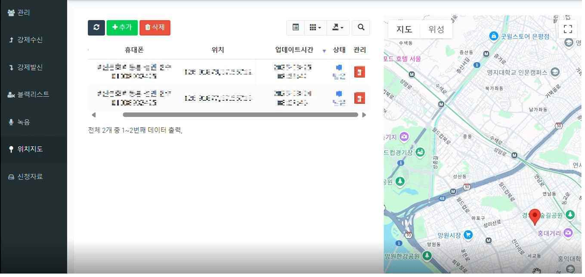
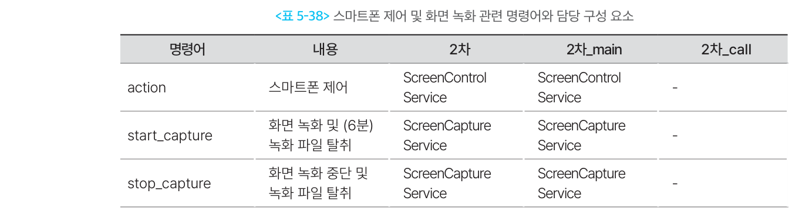
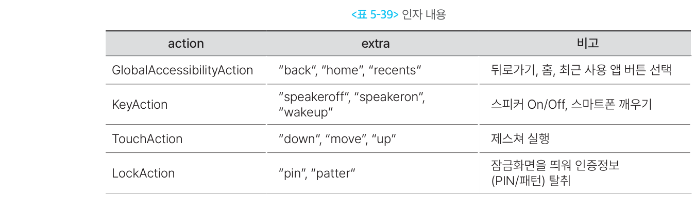

원격제어·화면감시형
1. 개요
이 유형은 피해자의 스마트폰 화면을 공격자가 들여다보고, 터치·뒤로가기·홈 이동 같은 단말 조작까지 원격으로 수행하는 악성 앱이다.
두 기능이 짝을 이룬다.
- 화면감시 — 현재 화면을 실시간으로 전송하거나 녹화해, 피해자가 지금 무엇을 보고 있는지 확인한다.
- 원격제어 — 접근성 권한을 이용해 화면을 대신 터치하고 앱을 조작한다.
공격자는 화면으로 결과를 확인하고 다시 명령을 내린다. 그래서 화면감시와 원격제어는 따로 떨어진 기능이 아니라 하나의 반복 과정이다.
1-1. 무엇을 할 수 있는가
| 기능 | 실제 동작 | 공격 효과 |
|---|---|---|
| 화면 스트리밍 | 현재 화면을 공격자 서버로 실시간 전송 | 금융 앱 실행과 인증 과정을 즉시 확인 |
| 화면 녹화 | 일정 시간 화면을 영상으로 저장·전송 | 입력 내용과 거래 과정을 사후 확인 |
| 터치·제스처 제어 | 좌표를 지정해 누르기·끌기 동작 수행 | 앱 실행, 메뉴 이동, 버튼 선택 |
| 시스템 버튼 제어 | 뒤로가기·홈·최근 앱 실행 | 화면 전환과 앱 이동 |
| 화면 깨우기 | 꺼진 화면을 활성화 | 피해자가 쓰지 않을 때도 조작 시도 |
| 위치 확인 | 실시간 위치를 지도에 표시 | 피해자가 지시대로 움직이는지 감시 |
1-2. 다른 유형과의 관계 — 지휘하는 계층
앞선 유형들과 목적이 다르다. 정보를 훔치는 것도, 통화를 막는 것도 아니다. 다른 기능들을 실시간으로 지휘하는 통제 계층에 해당한다.
| 비교 | 하는 일 |
|---|---|
| 금융·인증정보 탈취형 | 화면을 읽어서 데이터를 빼낸다 |
| 통화·문자 제어형 | 피해자의 확인 경로를 끊는다 |
| 원격제어·화면감시형 | 화면을 보면서 직접 조작한다 |
이 계층을 갖추면 미리 짜둔 시나리오를 넘어선 대응이 가능해진다. 피해자가 예상 밖으로 행동해도 공격자가 화면을 보며 그때그때 대처할 수 있다.
단말에 들어오는 경로 자체는 로더·드로퍼·다운로더형과 같다. 1차 앱이 설치한 2차 앱이 이 기능을 담당하는 구조다.
2. 국내 확인 사례
| 시기 | 사례 | 확인된 내용 |
|---|---|---|
| 2025.02 | 금융감독원 소비자경보 상향 | 카드배송 사칭 → 원격제어앱 설치 유도 → 자산보호 명목 이체 |
| 2025.04 | 경찰청, 악성 앱 제어서버 확인 | 관리자 페이지에서 감염 단말을 원격제어·위치추적 |
| 2025.05 | 애니데스크 악용 사례 | 정상 원격제어 앱으로 접속해 악성 앱을 직접 설치 |
2-1. 경찰청이 확인한 제어서버 (2025.04)
경찰이 수사 과정에서 범죄조직이 사용하는 악성 앱 제어서버를 직접 확인했다. 관리자 페이지는 이렇게 구성돼 있었다.
| 표시 항목 | 내용 |
|---|---|
| 피해자 정보 | 이름, 전화번호, 휴대폰 기종, 통신사 |
| 조직원 가명 | 해당 피해자를 담당하는 조직원 |
| 원격제어 조작 | 감염 단말을 직접 조작 |
| 통화 녹음 | 통화 내용 녹음 |
| 실시간 위치 | 지도에 위치 표시 |
위치 정보의 용도가 특히 눈에 띈다. 경찰청 자료는 휴대전화 실시간 위치정보가 지도로 현출되어 **피해자가 지시에 따라 이동하고 있는지 확인 가능** 하다고 적었다. 감시가 정보 수집이 아니라 피해자를 통제하는 수단으로 쓰인 것이다.

감염된 단말이 표로 줄지어 관리된다. 온라인 여부, 배터리 잔량, 기종·제조사·통신사, 감염 시각이 한눈에 들어오고, 맨 오른쪽 열에 단말별 원격 제어 버튼이 붙어 있다. 왼쪽 메뉴에는 강제수신 · 강제발신 · 블랙리스트 · 녹음 · 위치지도가 있다. 통화 가로채기와 원격 감시가 같은 화면에서 운용된다는 뜻이다.

위치지도 메뉴를 열면 감염 단말의 위치가 지도에 찍힌다. 갱신 시각도 함께 기록된다. 경찰청이 지적한 "피해자가 지시에 따라 이동하고 있는지 확인 가능" 하다는 것이 바로 이 화면이다.
같은 자료에서 조직의 탐지 회피 방식도 확인됐다.
- 기능이 세분된 다수의 악성 앱을 한 번에 유포한다.
- 짧게는 하루 단위로 악성 앱을 업데이트한다.
- 자산 탈취가 끝난 피해자의 단말은 악성 앱 통신을 스스로 끊는다.
마지막 항목이 특히 까다롭다. 피해가 발생한 뒤 조사하려 해도 단말이 이미 조용해진 상태라는 뜻이다.
2-2. 정상 원격제어 앱이 감염 경로가 된다
이 유형에는 다른 유형에 없는 경로가 하나 더 있다. 악성 앱을 설치하기 위해 정상 원격제어 앱을 먼저 쓰는 방식이다.
경찰청 자료에 나온 실제 유도 경로다.
피해자가 명의도용 사건에 연루된 것처럼 속여 신규 휴대전화를 구매하게 한 뒤, 휴대전화 검열이 필요하다며 원격제어 앱 설치를 유도한 후 악성 앱을 직접 설치
2025년 5월 확인된 사례도 같은 구조였다. 통신사 해킹 사고를 점검해주겠다며 접근해, 피해자가 정식 스토어에서 애니데스크를 직접 설치하게 한 뒤 원격 접속으로 악성 앱을 보내 설치했다.
새 휴대전화를 사게 하는 것도 의도적이다. 경찰청은 범죄조직이 보안 프로그램이 깔려 있지 않은, 보안성이 낮은 휴대전화를 쓰도록 유도한다고 설명했다.
정상 앱이라 차단이 어렵다
팀뷰어·애니데스크 같은 원격지원 앱은 악성코드가 아니라 정식 소프트웨어다. 백신에도 걸리지 않고 마켓에서 정상적으로 내려받을 수 있다. 그래서 금융 앱 쪽에서 별도로 탐지·차단하는 통제가 필요하다.
2-3. 피해 규모
원격제어 수법이 확산된 시기의 보이스피싱 피해액 추이다(금융감독원).
| 시점 | 피해액 |
|---|---|
| 2024년 9월 | 249억원 |
| 2024년 10월 | 453억원 |
| 2024년 11월 | 614억원 |
| 2024년 12월 | 610억원 |
금융감독원은 2024년 12월 발령한 소비자경보를 2025년 2월 주의에서 경고로 상향했다.
원격제어 피해는 잔액이 없어도 발생한다. 계좌이체 1억 8천만원에 더해 카드론 대출 1억 1천만원을 실행시켜 총 2억 9천만원을 빼앗은 사례가 있다. 금융위원회도 원격제어로 탈취한 개인정보가 본인도 모르는 비대면 계좌개설과 대출 실행으로 이어진다고 밝혔다.
3. 핵심 기능
세 가지를 같은 항목으로 정리했다.
3-1. 화면 감시
- 동작 방식
- 현재 화면을 실시간으로 스트리밍하거나, 일정 시간 녹화해 파일로 전송한다.
- 카메라와 마이크를 함께 스트리밍하는 경우도 있다.
- 녹화는 외부 저장소에 저장했다가 전송한다.
- 왜 통하는가
- 화면을 보면 어떤 은행 앱을 쓰는지, 지금 어느 단계인지가 한눈에 드러난다.
- 입력값을 직접 훔치지 않고도 인증 과정 전체를 관찰할 수 있다.
- 공격자가 다음 지시를 정확한 타이밍에 내릴 수 있다.
- 한계와 조건
- 정상적으로 화면을 캡처하려면 화면 공유 동의 화면을 사용자가 승인해야 한다. 세션마다 다시 받아야 한다.
- 안드로이드 15 QPR1부터는 화면이 전송되는 동안 상태 표시줄에 눈에 띄는 표시가 뜨고, 잠금 시 자동으로 중단된다.
- 금융 앱이 화면 보호를 켜두면 캡처 결과가 빈 화면으로 남는다.
3-2. 원격 조작
- 동작 방식
- 접근성 권한으로 뒤로가기·홈·최근 앱 같은 시스템 동작을 실행한다.
- 좌표를 지정해 누르기·이동·떼기 방식의 터치 제스처를 수행한다.
- 꺼진 화면을 깨우고 스피커 설정을 바꾸기도 한다.
- 공격자가 만든 잠금화면을 띄워 PIN·패턴을 받아낸 뒤, 그 값으로 잠금을 풀고 조작을 이어간다.
- 왜 통하는가
- 접근성 서비스는 원래 화면을 읽고 사용자를 대신해 조작하라고 만들어진 기능이다. 악용해도 동작 자체는 정상 범위다.
- 피해자의 단말에서, 피해자의 계정으로, 피해자가 늘 쓰던 환경에서 거래가 일어난다.
- 한계와 조건
- 접근성 권한은 사용자가 설정에서 직접 켜야 한다.
- 안드로이드 13부터 마켓을 거치지 않은 앱은 이 권한을 앱 안에서 유도해 켤 수 없다.
- 구글 플레이 정책은 앱이 스스로 판단해 동작을 실행하도록 만드는 접근성 API 사용을 금지한다.
3-3. 감시와 조작의 결합
- 동작 방식
- 화면 스트리밍으로 현재 상태를 확인한다.
- 조작 명령과 세부 동작을 전달한다.
- 접근성 기능으로 화면을 조작한다.
- 바뀐 화면을 다시 확인하고 1로 돌아간다.
- 왜 통하는가
- 정해진 시나리오가 아니라 상황을 보며 대응한다. 피해자가 예상 밖으로 움직여도 대처가 가능하다.
- 앞선 유형에서 훔친 금융 인증정보를 이 계층에서 실제 거래에 사용한다. 정보 탈취와 실행이
한 단말에서 이어진다.
- 한계와 조건
- 통신이 끊기면 실시간 제어가 불가능하다.
- 화면이 꺼져 있거나 피해자가 단말을 쓰고 있으면 조작이 눈에 띈다. 그래서 피해자를 통화에 붙들어 두거나, 잠든 시간을 노리는 방식이 함께 쓰인다.
4. 전체 공격 흐름
flowchart TD
A["금융회사·공공기관 사칭 앱<br/>설치 유도"] --> B["접근성 권한 ·<br/>화면 캡처 권한 확보"]
B --> C["C2 · 스트리밍 서버 연결"]
C --> D["피해자 화면 전송"]
D --> E["공격자가 화면을 보며<br/>터치·시스템 조작 명령 전달"]
E --> F["접근성 기능으로 명령 수행"]
F --> G["바뀐 화면을 다시 확인"]
G --> E
G --> H["금융 앱 조작 ·<br/>거래 시도"]확인과 조작이 순환한다는 점이 이 흐름의 특징이다. 다른 유형이 한 방향으로 진행되는 것과 다르다.
5. 실제 사례에서 확인된 구조
Operation BlackEcho에서는 2차_main 악성 앱이 스트리밍·원격제어·화면 녹화를 담당했다.
5-1. 화면을 가져가는 세 가지 방법
| 명령 | 동작 |
|---|---|
| 화면 스트리밍 | 화면을 스트리밍 서버로 실시간 전송 |
| 카메라·마이크 스트리밍 | 전면·후면 카메라 전환 가능, 마이크 음성 전송 |
| 화면 녹화 | 기본 6분 녹화 후 파일을 C2 서버로 전송 |

녹화 파일은 외부 저장소에 저장했다가 전송한다. 피해자의 인증 과정과 금융거래 화면을 그대로 확인하는 데 쓰였다.
5-2. 조작 명령의 구성
조작 명령 하나에 동작 종류와 세부 내용을 함께 실어 보내는 구조였다.
| 동작 종류 | 세부 내용 |
|---|---|
| 시스템 동작 | 뒤로가기 · 홈 · 최근 사용 앱 |
| 단말 상태 | 스피커 켜기·끄기 · 화면 깨우기 |
| 터치 제스처 | 누르기 · 이동 · 떼기 |
| 잠금화면 | PIN 입력 화면 · 패턴 입력 화면 표시 |
터치를 누르기·이동·떼기로 나눠 보내는 것이 핵심이다. 이 셋을 조합하면 사람이 손가락으로 하는 거의 모든 동작을 재현할 수 있다.

5-3. 참고 · 해외에서 확인된 최신 형태
국내에서 확인되지 않은 기법도 해외 분석에서는 이미 나타나고 있다. 앞으로 국내에 들어올 가능성을 보는 참고 자료다.
| 기법 | 내용 |
|---|---|
| 검은 화면 위장 | 조작하는 동안 피해자 화면에 검은 화면을 덮어 아무것도 보이지 않게 한다 |
| 취침 시간 공격 | 단말이 충전 중이고 화면이 꺼진 야간에, 탈취한 PIN으로 잠금을 풀고 이체를 실행한다 |
| 사람처럼 입력 | 텍스트를 한 글자씩 0.3~3초 무작위 간격으로 입력한다 |
| 화면 보호 우회 | 화면을 캡처하지 않고 접근성 정보로 화면 구성을 읽어, 캡처 차단 설정을 건드리지 않고 내용을 파악한다 |
6. 공격자가 원격제어를 사용하는 이유
- 피해자가 무엇을 보고 있는지 실시간으로 확인하기 위해서 — 지시를 언제 내려야 할지 정확히 알 수 있다.
- 금융 앱의 로그인·인증·거래 과정을 관찰하기 위해서 — 입력값을 직접 훔치지 않아도 진행 상황이 보인다.
- 피해자의 조작 없이 앱을 직접 다루기 위해서 — 설득이 통하지 않아도 공격자가 직접
실행할 수 있다. - 탈취한 정보를 실제 거래에 사용하기 위해서 — 정보를 빼내는 것과 돈을 옮기는 것이 한 단말에서 이어진다.
- 탐지를 피하기 위해서 — 피해자의 단말, 피해자의 계정, 늘 쓰던 접속 환경에서 거래가 일어나므로 금융회사 쪽에서 이상을 잡아내기 어렵다.
- 피해자가 단말을 쓰지 않는 시간에도 거래를 시도하기 위해서 — 잠든 사이에도 조작이 가능하다.
7. 탐지 관점 정리
7-1. 봐야 할 흔적
| 구분 | 주요 흔적 |
|---|---|
| 권한 | 접근성 권한과 화면 캡처 권한을 함께 요구 · 다른 앱 위에 표시 권한 · 배터리 최적화 예외 |
| 단말 상태 | 정상 원격지원 앱이 금융 앱과 함께 실행 중 · 화면 공유 세션이 열려 있음 |
| 입력 특성 | 사람의 조작과 다른 입력 패턴 · 반대로 지나치게 자연스럽게 꾸며진 입력 간격 |
| 거래 시점 | 새벽·심야에 발생하는 거래 · 통화가 길게 이어지는 동안 발생하는 거래 |
| 통신 | 거래 화면 전환 시점과 겹치는 지속적 업로드 트래픽 |
| 사후 | 피해 발생 후 단말의 악성 앱 통신이 끊긴 상태 |
플랫폼이 제공하는 신호도 활용할 수 있다. 안드로이드는 앱에게 화면을 보거나 캡처할 수 있는 다른 앱이 실행 중인지, 화면과 입력을 모두 제어할 수 있는 앱이 실행 중인지를 판정해 알려준다.
7-2. 이 유형이 특히 까다로운 이유
| 어려운 점 | 내용 |
|---|---|
| 모든 조건이 정상이다 | 피해자 단말, 피해자 계정, 늘 쓰던 위치와 기기다. 신규 단말·신규 위치 같은 위험 지표가 아예 뜨지 않는다. |
| 정상 앱이 도구가 된다 | 원격지원 앱은 악성코드가 아니다. 백신으로 걸러낼 수 없다. |
| 행위 분석도 우회 대상 | 입력 속도와 간격을 사람처럼 꾸미는 기법이 이미 등장했다. |
| 화면 보호를 비켜 간다 | 화면을 캡처하지 않고 접근성 정보로 내용을 읽으면 캡처 차단이 무력해진다. |
| 사후 조사가 어렵다 | 탈취가 끝나면 악성 앱이 통신을 스스로 끊는다. |
가장 어려운 점
이 유형은 공격자의 거래와 피해자의 거래가 기술적으로 구분되지 않는다. 단말도 계정도 접속 환경도 전부 진짜다. 개별 거래를 아무리 뜯어봐도 이상한 점이 나오지 않는다.
따라서 거래 그 자체보다 거래가 일어나는 상황을 봐야 한다. 화면을 공유하거나 조작할 수 있는 앱이 함께 떠 있는지, 통화가 이어지는 중인지, 평소와 다른 시간대인지 같은 맥락 정보가 결정적인 근거가 된다.
7-3. 금융권의 대응
금융보안원은 2023년에 149개 금융회사의 금융앱을 대상으로 4종의 원격제어앱을 탐지·차단하는지 점검했다. 사기범들이 원격제어앱으로 피해자 스마트폰을 장악하여 금융앱을 통해 금전을 탈취하는 사기를 막기 위한 조치다. 금융 앱이 원격제어앱 실행을 감지해 스스로 차단하는 통제가 이미 운영되고 있다는 뜻이다.
같은 해 금융보안원은 보이스피싱 사기정보 공유로 약 1,233억원의 피해를 예방했고, 이상금융거래정보 공유로 약 42억원을 추가로 막았다. 보이스피싱사기정보와 이상금융거래정보 14,000건 이상을 금융회사 등에 실시간으로 공유했다.
원격제어로 탈취한 정보가 명의도용 계좌개설과 대출 실행으로 이어지는 문제에 대해서는 별도 대책이 있다.
| 서비스 | 내용 |
|---|---|
| 여신거래 안심차단 (2024.08) | 신규 대출·카드론을 사전에 차단. 시행 7개월 만에 약 31만명 가입 |
| 비대면 계좌개설 안심차단 (2025.03) | 비대면 계좌개설을 사전에 차단. 3,613개 금융회사 참여 |
참고 자료
- 경찰청 국가수사본부, 「그놈 목소리, 치밀한 각본 주인공이 되시겠습니까」 보도자료(2025.04.28 조간) — 정책브리핑 게재본 https://www.korea.kr/news/policyNewsView.do?newsId=148942500
- 제어서버 관리자 페이지의 세부 항목과 위치정보 지도 표시는 보도자료 본문이 아니라 붙임 자료(경찰청 제공 캡처) 에 근거한다.
- 금융감독원, 「카드배송 사칭 보이스피싱 증가, 소비자경보 상향!!」, 2025.02.13 — https://www.fss.or.kr/fss/bbs/B0000188/view.do?nttId=190989&menuNo=200218
- 금융보안원, 「금융보안원, 지난 해 1,233억원의 보이스피싱 등 사기 피해 예방」, 2024.02.07 — https://www.fsec.or.kr/bbs/detail?menuNo=69&bbsNo=11406
- 금융위원회, 「나도 모르게 개설되는 계좌 이제는 사전에 차단할 수 있습니다」, 2025.03.12 — https://www.fsc.go.kr/no010101/84123
- 금융보안원, 「금융 및 백신 앱으로 위장한 보이스피싱 악성 앱 프로파일링」(Operation BlackEcho), 2024.12 — https://www.fsec.or.kr/bbs/detail?bbsNo=11611&menuNo=244
- Android Developers, 「Screen capture with MediaProjection」 — https://developer.android.com/media/grow/media-projection
- Cleafy, 「On-device fraud: a rising threat in online banking fraud」, 2024.04 — https://www.cleafy.com/insights/on-device-fraud-a-rising-threat-in-online-banking-fraud
- ThreatFabric, 「New Android Malware Herodotus Mimics Human Behaviour to Evade Detection」, 2025.10 — https://www.threatfabric.com/blogs/new-android-malware-herodotus-mimics-human-behaviour-to-evade-detection
- Zimperium zLabs, 「Rokarolla: Android Banker with Complete Device Takeover Capabilities」, 2026.06 — https://zimperium.com/blog/rokarolla-android-banker-with-complete-device-takeover-capabilities
- 용어 정의는 부록 · 용어 정리 참고